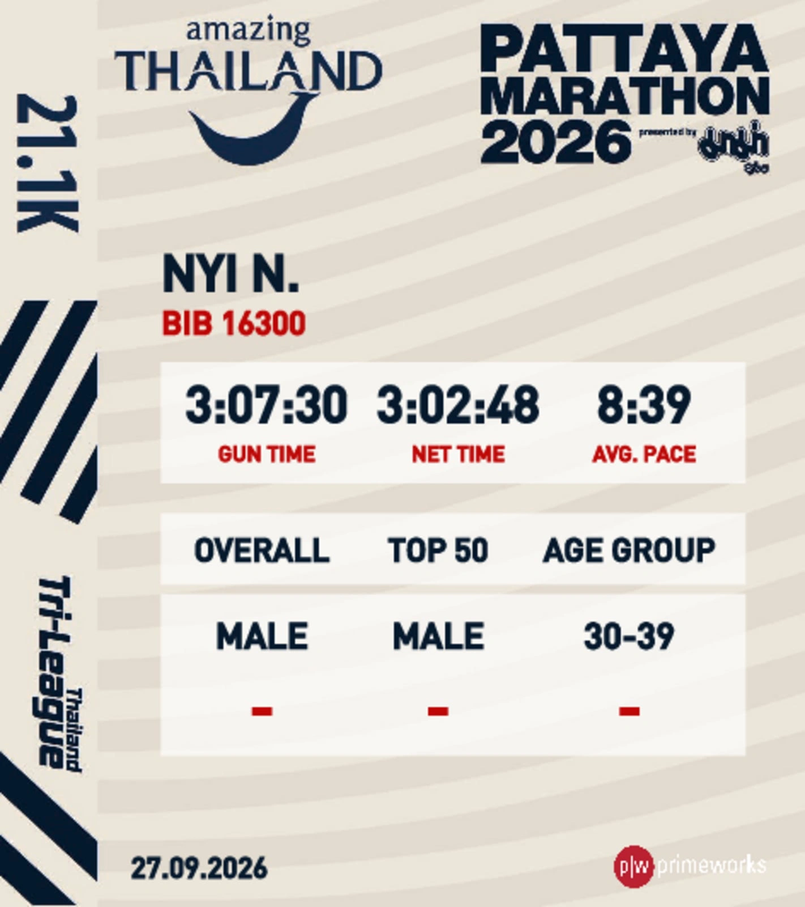
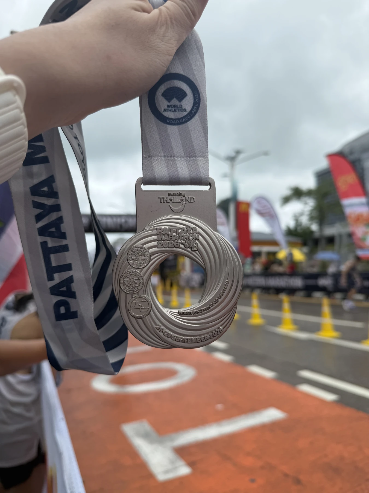
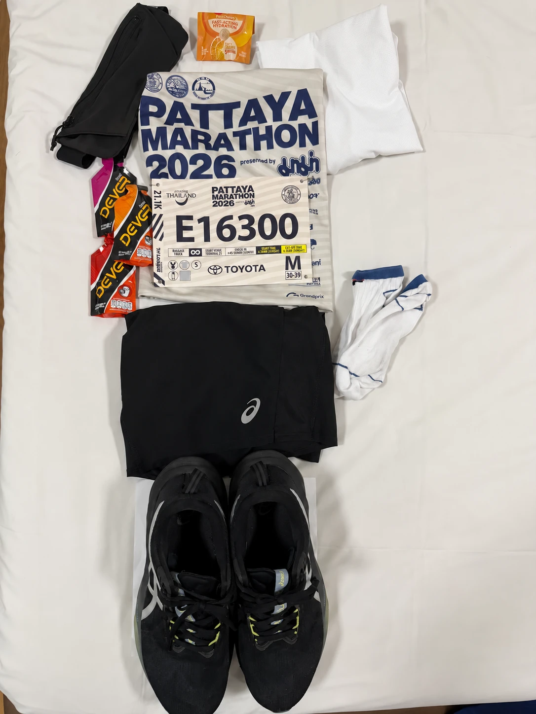
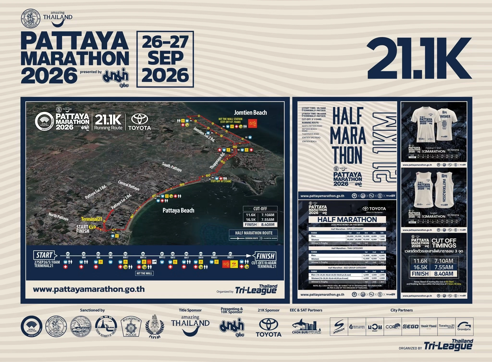

Race 06 · Half-marathon finisher
Amazing Thailand
Pattaya Marathon.
21.1KM
Official record
The result.
Race day setup
On the day.
Terminal 21
Pattaya
Open in Google Maps
ASICS
Novablast 5
Race-day pair · 21.1 km
- Start
- 5:10 AM
- Finish cut-off
- 8:40 AM
- Category
- Male · 30–39
Verified finish
Official proof.
The official Pattaya Marathon half-marathon result shows the net time, gun time, and average pace.


What came home
The medal.
A sixth finish for the running record, marked by the silver Pattaya Marathon medal.
Race 06 / 06Before the start
Race kit.
Event shirt, bib E16300, belt, fuel, socks, and the Novablast 5 laid out for Pattaya.
View the race location
Official route plan
Pattaya
to Jomtien.
The official 21.1 km plan starts and finishes at Terminal 21 Pattaya, follows the coast toward Jomtien Beach, and marks aid stations and cut-off points along the route.
View full-size plan